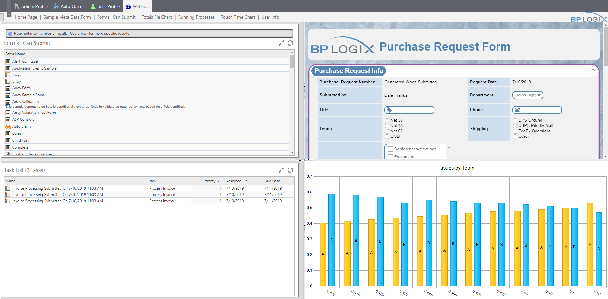
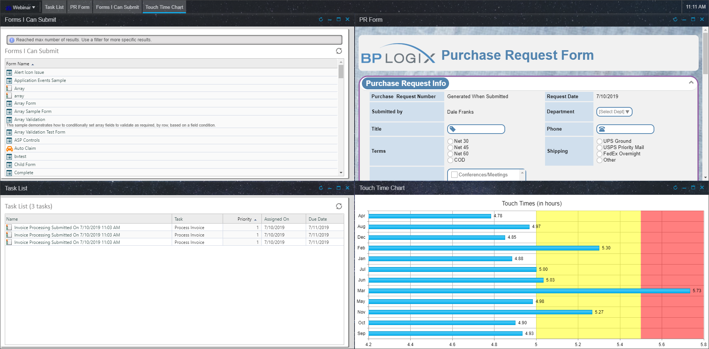
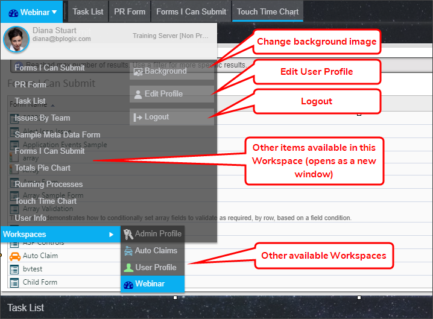
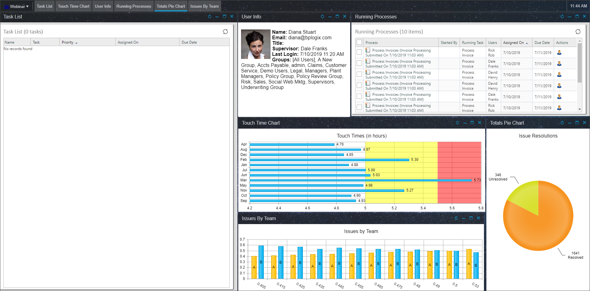
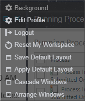

Users of Process Director v5.23 and higher have an optional user interface for the traditional Workspace used in all prior versions. This new user interface, which is called the Desktop Interface, provides a more customizable interface. Unlike the traditional Workspace, which can't be customized at the user level, the Desktop Interface offers end users the ability to customize the available interface objects in a number of ways. The Desktop Interface is an enhancement for the traditional Workspace. Using the Desktop interface is optional for each Workspace, and both traditional and Desktop Workspaces can be used in the same installation.
Let's compare the traditional Workspace, with its array of tabs and specified workspace portlets, with the Desktop Interface. The traditional Workspace appears similar to the Workspace below.

User can temporarily change the size of the individual portlets, but these changes are not permanent. Other than that, there are no user-level customization options. The Desktop Interface, on the other hand, has a different visual appearance, and customizations are cached as user preferences, and can, in fact, be saved permanently as the default configuration. With that in mind, the same Workspace used in the example above will display using the Desktop Interface as shown below.

A few immediate differences are apparent. The portlets themselves are no longer displayed in sizable frames, but rather as independent windows, each of which can me resized, minimized, maximized, and moved about on the screen. The window positioning and size is automatically saved whenever the user makes a change, so any changes the end user makes to the window displays are persistent.
At the top of the screen, instead of a row of tabs for different workspaces, a row of tabs listing the visible windows is displayed, which can be used to select the desired window, as well as manipulate the window, if necessary. For instance, if you minimize a window, you can restore it by clicking its tab at the top of the screen. The Workspace tabs have been replaced in the Desktop by a dropdown navigation menu in the upper left corner of the screen.
The navigation dropdown menu offers a number of options.

The Background button can be used to change the background image that was initially configured for this Workspace in the Workspace configuration that was implemented by the administrator.
The User Info slideout of the traditional Workspace has been replaced by an Edit Profile button that will open the user profile as a new window.
The Logout button now appears automatically, and no longer needs to be specifically configured in the Desktop Interface, as it did in the traditional Workspace.
Navigating to another workspace item will open the item as a new Window in the Desktop Interface, and, when the window opens, will display a new tab for the new window at the top of the screen. The new window can be sized just like any other window, and, in fact, placed persistently in the workspace. Every portlet or navigation button configured for the Workspace will show up in the navigation menu, and added to the workspace display by the user. Using this sample Workspace, the end user can customize this Workspace to appear like the example below.

Users do not have access to any item that hasn't been configured as part of the Workspace, but they can customize how they wish to display the items that have been made available to them. This enables users to, within the limits defined by administrators, create a Workspace UI that they feel enhances their user experience.
Finally, at the bottom of the navigation dropdown, users can navigate to other workspaces.
An additional popup menu appears with you right-click in the tab bar at the top of the screen.

The In addition to the Background, Edit Profile, and Logout buttons, additional configuration options are available.
The Reset My Workspace button will remove any recent changes the user has made to the workspace, and revert the Workspace configuration to the last saved appearance.
The Save Default Layout button is available only to administrators, and will save the current layout configuration as the default configuration for the Workspace. Initially, the saved default is the configuration that was specified when the workspace was created. Saving a layout will replace the initial default with the new, saved configuration.
The Apply Default Layout button is available only to administrators, and will revert to the default layout.
The Cascade Windows button will arrange all of the visible windows in a standard Window cascade.
The Arrange Windows button will rearrange the existing windows in equal-sized windows.